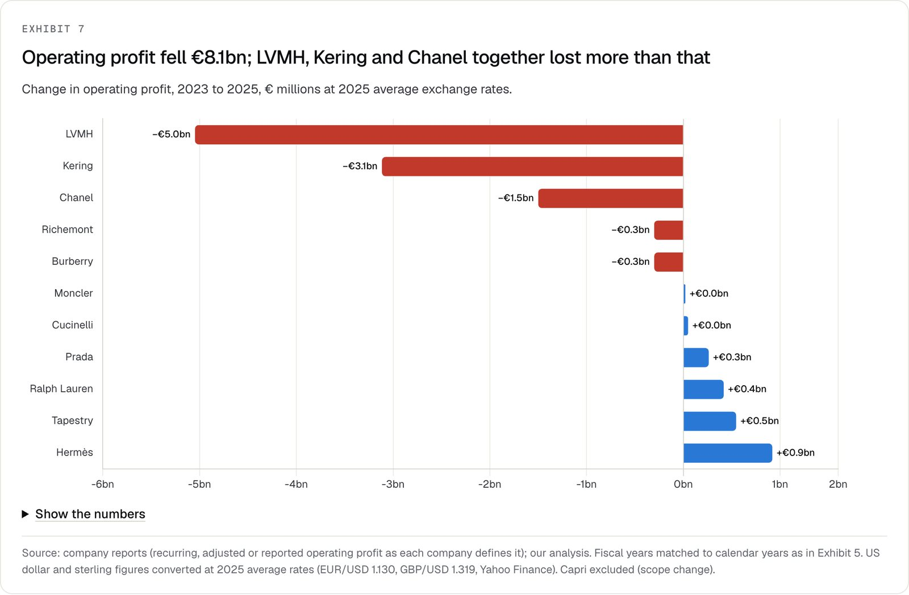
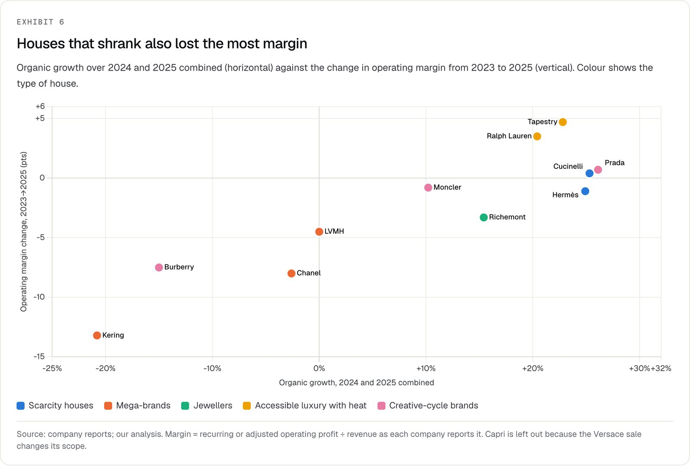
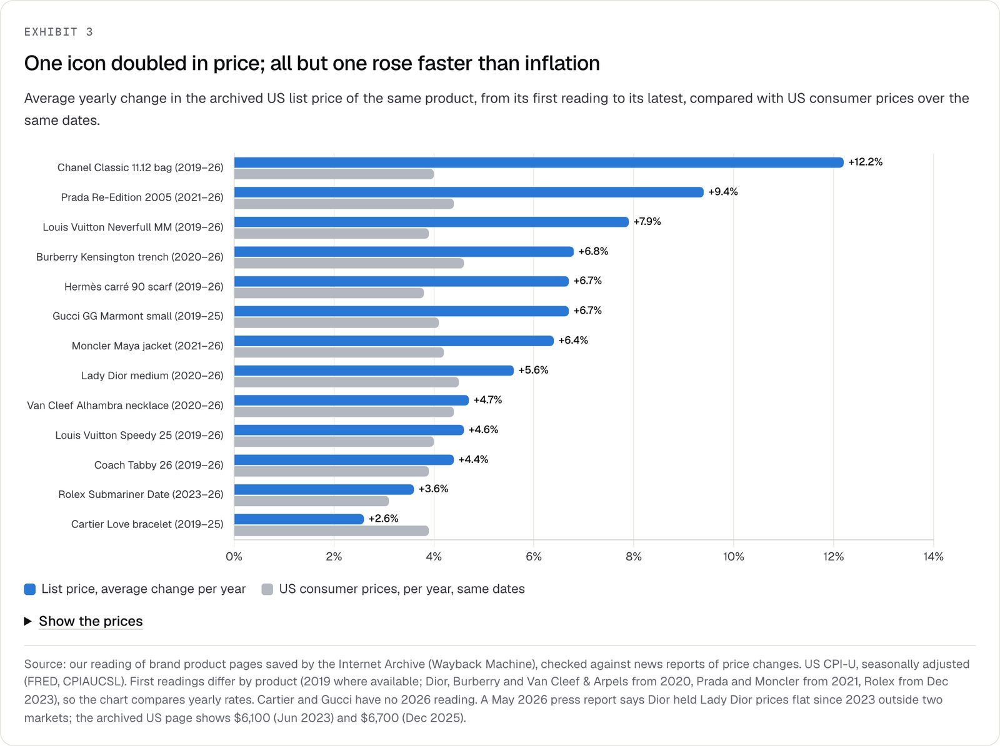
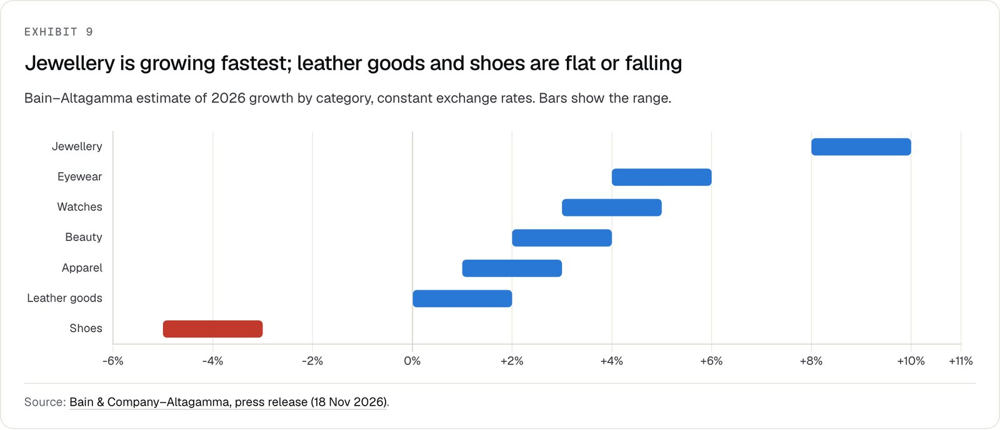

Work / Luxury’s Lost Growth
Self-builtNov 2026
Luxury’s Lost Growth
I traced where the luxury industry’s growth went, using 2,252 figures from 12 houses’ own annual and interim reports. Operating profit across 11 houses fell €8.1bn (−17%) from 2023 to 2025, and 74% of that came from two businesses: LVMH’s fashion and leather goods division and Gucci. Six houses grew profit over the same years. Demand moved to jewellery, the Americas and brands with something new at a price people accept. The report ends with eight sized moves for five types of house.
About 470 claims checked against sources
The Challenge
After 2020, personal luxury goods boomed. Then growth stopped: sales slipped from €369bn in 2023 to €358bn in 2025 (Bain–Altagamma), and LVMH, Kering and Chanel all reported lower profits. The usual explanations, such as China, “luxury fatigue” and price rises, each explain part of it and don’t always agree.
I wanted to answer it the way a strategy team would: where exactly did the growth go, which houses kept growing and why, and what should each type of house do next? I used the companies’ own reported numbers wherever possible, and industry studies only where the companies don’t report.
What I Did
Split the question. I broke the question into six parts and tested each one against data:
Company filings. I collected 2,252 figures from the annual and interim reports of 12 houses: LVMH, Hermès, Kering, Chanel, Richemont, Prada, Moncler, Brunello Cucinelli, Burberry, Tapestry, Capri and Ralph Lauren. Each figure is stored with its source document and where in it the number appears. Fiscal years are matched to the calendar year that holds most of their months, and underlying growth uses each company’s own definition.
Studies and official data. I added the Bain–Altagamma, BCG–Altagamma, McKinsey–BoF and Deloitte studies, official statistics on China, Japan, Dubai, gold and interest rates, and Saks Global’s bankruptcy filings.
Prices. I read the US list prices of 13 iconic products from brand pages saved by the Internet Archive, using the snapshot nearest 1 July each year. I compared each with US consumer prices (FRED) over the same dates.
Profit and valuation. I compared operating profit in 2023 and 2025 at 2025 average exchange rates, so currency moves don’t distort it. I also compared share prices with those profit changes.
The report. I wrote it up in 10 chapters with 16 numbered exhibits. Each exhibit has a title that states its finding and a line naming its sources.
What I Found
Four of the 16 exhibits carry the main story. Click any chart to open it in the full report.




Fewer buyers, bigger spenders. Luxury buyers fell from about 400 million in 2022 to about 315 million in 2026, and the top customers now account for 48% of personal luxury spending, up from 30% in 2019 (Bain–Altagamma).
Even China is split. In Jul–Sep 2026, Tapestry grew 39% in Greater China and Ralph Lauren 28% in Asia, while LVMH and Kering each fell 5% in Asia.
Investors went further. From the end of 2023 to the end of 2025, LVMH’s operating profit fell 22% and its shares 12%. In 2026 its shares fell another 40% on organic growth of 2%, and Hermès shares also fell 40% while the company grew 5.5%.
What Houses Can Do
The results make more sense by business model than by company size, so the report sorts houses into five types:
It then sets out eight moves. Each one comes with its evidence, a company where it has worked, an illustrative size of the prize, a number to track and its risks.
| Move | Size of the prize (illustrative) |
|---|---|
| 1. Re-earn the price, and reopen the entry doorMega-brands first | About €2.4bn of revenue if LVMH Fashion & Leather Goods won back the 6% of organic sales it lost in 2024–2025. Coach shows it can be done: 11.0m new customers across Tapestry in a year. |
| 2. Grow where the category is growingJewellers; mega-brands with jewellery | €2.6–3.2bn of new jewellery spending in 2026 alone, on a €32bn market growing 8–10%. |
| 3. Restart the product engineMega-brands; creative-cycle brands | Gucci’s revenue fell from €9.9bn to €6.0bn. Winning back a third of that would add €0.4–0.5bn of operating profit. |
| 4. Rebalance exposure across regions and channelsAll houses | Mostly a risk reduction: Richemont’s Middle East and Africa region swung from +22% to −7% in a year. |
| 5. Own the second life of the productJewellers and watchmakers first | €2–3bn of new secondhand spending in 2026, on a €50bn market, plus the next new purchase. |
| 6. Win the AI shelfAll houses | Not yet measurable from public data; 70% of luxury questions put to AI assistants name no brand (Bain). |
| 7. Deepen the relationships that are still growingScarcity houses; jewellers; top-client teams | The largest pool in luxury: Bain estimates longer lives alone could add €300–600bn over 2026–2030. |
| 8. Make every store and every euro earn its placeMega-brands; creative-cycle brands | Each point of operating margin on LVMH’s 2025 revenue is worth about €0.81bn. |
Key Outcomes
- Built the fact base myself. I collected 2,252 figures from 12 houses’ annual and interim reports, each traced to where it appears in its source document, and added industry studies, official statistics and court filings.
- Found where the profit went. Operating profit fell €8.1bn across 11 houses from 2023 to 2025, and two businesses account for 74% of it.
- Showed the slump is not industry-wide. Hermès, Tapestry, Ralph Lauren, Prada, Cucinelli and Moncler all grew profit, and jewellery is the fastest-growing category.
- Tested a popular story against the data. Archived list prices showed that only one of 13 icons doubled; the others rose at very different speeds, and one rose more slowly than inflation.
- Turned it into decisions. The report gives eight moves for five types of house, each with a precedent, an illustrative prize, a number to track and its risks.
- Was clear about the limits. Most houses don’t report how many items they sell, so price and volume can only be separated indirectly. Bain’s full 2026 report isn’t public yet, some McKinsey figures come from press coverage, and the prizes are illustrative.